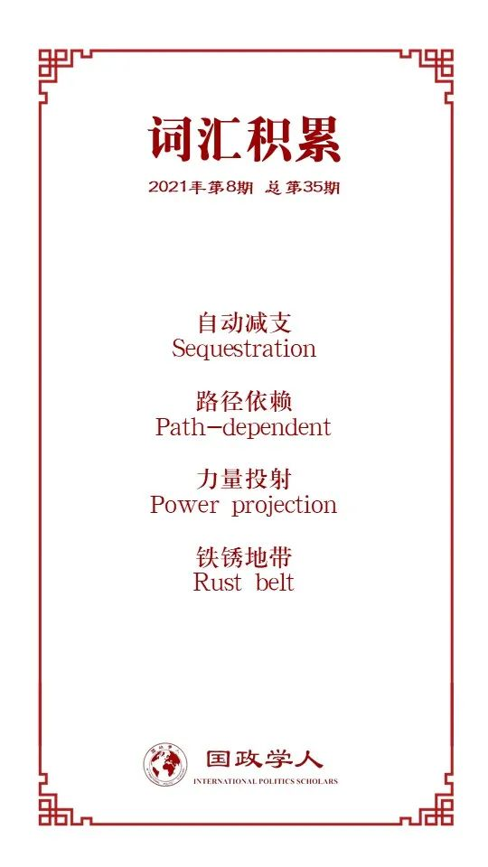

收录于合集

作品简介
【作者】 Peter Harris，科罗拉多州立大学政治学助理教授，主要研究领域为美国在印太地区的外交；Peter Trubowitz，伦敦政治经济学院国际关系学教授，主要研究领域为国际安全及美国外交政策。
【编译】 胡可怡（国政学人编译员，四川大学国际关系学院）
【校对】 赵怡雯
【审核】 张曼娜
【排版】 秦子宁
【美编】 杜丛竹
【来源】 Peter Harris, Peter Trubowitz, The Politics of Power Projection: The Pivot to Asia, Its Failure, and the Future of American Primacy, The Chinese Journal of International Politics , Volume 14, Issue 2, Summer 2021, Pages 187–217, https://doi.org/10.1093/cjip/poab002
【归档】 《国际关系前沿》2021年第8期，总第35期
期刊简介
《中国国际政治杂志》（ The Chinese Journal of International Politics ）成立于2006年，是牛津大学出版社出版的经同行评议的学术季刊，以现代方法论、历史、政策研究为主要内容，多数文章与中国及其外交政策相关，致力于为有关问题的学术交流提供平台，2020年影响力因子为3.649。
**力量投射的政治:“重返亚洲”的失败以及美国主导地位的未来
**
The Politics of Power Projection: The Pivot to Asia, Its Failure, and the Future of American Primacy
Peter Harris
Peter Trubowitz
内容提要
为什么奥巴马政府“重返亚洲”（pivot to Asia）战略最终以失败告终？本文认为这归咎于美国国内三个相互关联的因素： 其一，决策层过度的党派竞争（hyper- partisanship）；其二，缺乏吸引国内民众并使其理解、信服的外交政策叙事；其三，未能说服足够多的美国人相信“重返亚洲”对国内经济的发展是必要的。 这些国家内部的绊脚石使奥巴马政府无法充分发挥美国权力资本以实现在亚太地区进行长期务实部署的目标。基于对美国力量投射的国内影响因素的探讨，本文对“重返亚洲”失败原因的现有解释（国际层面的阻碍、战略本身设计与实施中的问题、特朗普意外当选）进行了补充，并认为对“重返亚洲”的案例研究具有一定的适用性，意味着目前美国的政治体系已经成为了制约该国的外交政策上层建筑的薄弱基础。
文章导读
在奥巴马任期内的所有外交政策举措中，“重返亚洲”（或“再平衡”）战略最受学界关注。即使一些分析家对其实际运行状况持负面评价，大多数人还是倾向于认为该战略所体现出的对亚洲地区的重新关注是美国对世界关键地区地缘政治环境变化的明智回应。然而到奥巴马卸任时，“重返亚洲”已经成为了一纸空文。随后继任的特朗普更是明确抛弃了“重返亚洲”战略中的关键支柱（例如跨太平洋伙伴关系协定），以此为其“美国优先”的亚洲政策扫清障碍。
为什么“重返亚洲”战略未能按计划顺利推进？对此，本文将美国国内的政治功能紊乱与该国在国际舞台上可用力量（usable power）的丧失联系起来，认为过度的党派竞争等国内因素削弱了美国进行海外力量投射的能力，使奥巴马政府无法获得足够的国内支持以保证“重返亚洲”战略的有效实施。总而言之，奥巴马政府的亚太计划无法克服美国国内日益加剧的分歧与极化，这些国内政治趋势亦影响着美国在亚洲及其他地区未来的主导地位。
针对上述问题，本文分为两部分进行深入阐释。文章的第一部分概述了“重返亚洲”战略的主要特征及其失败之处，并对目前流行的三种对该战略失败原因的解释进行了评估；基于对“重返亚洲”失败的案例分析，第二部分深化了已得结论，探讨了美国海外力量投射能力下降的内在逻辑。本文认为，美国国内的政治功能紊乱具有广泛的负面影响，制约着美国采取有计划的务实措施以应对来自中国、俄罗斯等其他大国的挑战。
01
“重返亚洲”战略及其存在的问题
从本质上讲， 奥巴马政府推出“重返亚洲”战略是为了在中国崛起导致东亚地区力量平衡发生变化的情势下，重新凸显美国在该地区的地缘政治影响力。 2009年奥巴马就任总统时，中国已经超越德国成为了世界第三大经济体，并且行将赶超日本。而从美国的视角看来，中国的军事力量也正随着蓬勃发展的经济实力，以及日益积极有为的国际抱负日益发展壮大。有内部消息称，奥巴马和他最亲密的政策顾问承认亚洲地区的上述地缘政治变化现实，并决心彻底改革美国亚太政策的各个方面，扩大和深化美国与该地区的战略联系。
1.“重返亚洲”的主要组成部分
奥巴马第一任期内，美国的新亚洲战略就已现端倪。执政初期，奥巴马对中美关系的改善给予了特别的关注。在接下来的几年里，随着更为广泛的“重返亚洲”战略的宏观轮廓逐渐显现， 加强对华关系虽仍是目标之一，在对华示好的同时，美国政府也推行了其他举措，包括：提升与盟友以及战略合作伙伴的关系、推动环太平洋经济体之间的经济一体化进程、积极接触并参与区域性多边合作组织、重新调整美国军事资产的战略部署。
其中，奥巴马加强中美关系的努力首先取得了显著成果，一些评论员甚至提出了建立中美“两国集团”（G2）的构想。尽管这种认为中美关系可能成为全球治理引擎的乐观情绪最终消退，对华接触的总体目标却一直延续到了奥巴马的第二任期。总而言之，奥巴马政府更愿意低调处理与中国的分歧，而不是公开向北京施压，其对华政策的总体基调是在中国愿意接受美国倡议的领域（例如气候政策）发展合作，同时尽量避免影响两国双边关系大局的争端。
然而，与中国接触只是“重返亚洲”的一个部分。奥巴马亚洲战略的其他部分旨在兼施内外政策，从军事上制衡（balance against）中国。依据本国军事资源状况，奥巴马政府下令增加在亚太地区的军力部署，使60%的美国军舰在2020年前集中部署在太平洋地区。此外，为了重申美国的权力地位，诸如“海空一体战”的新型军事理论也逐渐得以提出与发展。
与这些军事举措相配合的是美国与亚洲其他国家的广泛外交与政治接触。在奥巴马任期内，美国提升了与印尼、缅甸、越南和老挝的双边关系，强化了与日本、韩国、澳大利亚、新西兰、菲律宾的传统联盟关系，此外还积极参加诸如东盟、亚太经合组织等区域性合作组织。这些举措传达的信息是：美国希望维持在太平洋地区的存在，并致力于为该地区其他国家提供除搭崛起的中国便车之外的替代性政策选择。在经济方面，“重返亚洲”的标志性支柱是计划涵盖12个环太平洋经济体的自由贸易协定——TPP。甫一上任，奥巴马就表现出了对TPP的全力支持，并将TPP视为巩固美国在东亚地区领导地位，防范中国在亚太建立经济支配地位的重要载体。
在许多观察者看来，尽管奥巴马试图改善中美关系中的某些方面，“重返亚洲”的许多措施还是体现了遏制中国崛起的明显意图。此战略的追捧者将其视为保护美国利益，避免与中国大规模竞争的必要手段；而批评者则认为，针对中国的制衡行为会激怒中国，激起后者的激烈反抗。但无论是追捧者还是批评者都一致同意，如果“重返亚洲”战略得以全面有效地实施，将使美国的政策思路产生一系列重大且深远的变革。
2.“重返亚洲”战略为何失败：三种可能的病状
“重返亚洲”战略最终失败，但并非彻底失败。奥巴马政府仍成功地使美国的亚洲政策（尤其是在美国与东南亚国家的关系方面）产生了一些重要变化。然而，该战略取得的成就却被其在其他领域的失败所抵消，这些失败体现在：对华关系恶化；针对印太地区的军事再平衡计划未能如预想充分施行；一些关键伙伴关系（如美菲同盟）被削弱；美国对TPP的支持亦未能在国内得到保证与巩固；最根本的是， “重返亚洲”战略从未在美国国内被全面“制度化”。
目前流行的有关“重返亚洲”战略失败原因的解释主要有以下三种：
（1）不利的国际环境；
（2）战略本身内容不连贯，缺乏足够资源支持；
（3）过于依赖总统的个人选择，而被迫成为特朗普意外当选的牺牲品。
**
** 这三种解释虽然有一定道理，但是显然不够充分。
就不利的国际环境而言，第一种解释版本侧重于东亚地区之外的地缘政治局势，认为“重返亚洲”是不合时宜的。因为这一转向的前提是欧洲与中东的安全局势足够稳定，能够允许美国进行有意义的亚太再平衡。然而事实是，奥巴马不得不在应对乌克兰危机等紧急情况时搁置其在东亚的战略野心；而第二种解释版本则将“重返亚洲”的失败归咎于领导层对东亚结构性状况的错判，认为“重返亚洲”只会激怒中国，促使中国对美进行同等程度的对抗。在这些批评家看来，为了在权力转移的背景下更有效地管控中美关系，美国应该专注于紧缩克制，而非将军事资产大规模投注到东亚地区。
就战略本身的弊病而言，有一些批评声音认为，美国无法做到对中国“恩威并施”（接触政策与遏制行为并举），因为“接触”与“遏制”两种战略导向在本质上即不相兼容，这一矛盾导致该“重返亚洲”战略无法避免崩溃的命运。也有其他批评者认为，“重返亚洲”战略本身是自洽的，但奥巴马政府没有为该战略的运行提供足够的资金与物资支持。总而言之，这一类的原因解释无一例外都聚焦于讨论该战略本身的设计与执行过程中的不足。
最后一种解释则将“重返亚洲”的失败归咎于美国国内的“黑天鹅”事件——特朗普的意外当选，使得奥巴马时代的许多倡议都葬送在这位继任总统的手中。这种观点有一定道理，但是“重返亚洲”的失败不能单单归责于这一个因素。有明显的证据显示，在特朗普上台之前，该战略的运行就已经暴露出了问题，而在特朗普执政之后发生的一系列事件更是凸显了美国政治运行中的普遍问题，这些问题的存在限制了美国有效利用自身实力优势的能力。下一节内容将讨论这些问题的具体表现，以及它们如何削弱美国的可用力量。
02
“重返亚洲”的国内底面
本文认为，美国国内的三种病态削弱了奥巴马调动整合美国潜在权力资产，并将其转化为国际层面上可用力量的能力。 这三种病态体现为：
**
** （1）决策层过度的党派竞争；
**（2）缺乏吸引国内民众并使其理解、信服的外交政策叙事；
**
（3）未能说服足够多的美国人相信“重返亚洲”对国内经济的发展是必要的。 ****
相较于上一节有关“重返亚洲”失败的三种流行解释，本文认为可用力量受到国内因素侵蚀的观点具有更强大的解释力，为解读美国力量投射失败的可能性提供了分析的一般范式。
1.过度的党派竞争
美国的外交政策学者倾向于相信，国内两党实现合作有助于美国在海外做出更持久、更可信的政策承诺。然而在奥巴马任职期间，国会两党在意识形态上的分歧比1945年以来的任何时候都要显著。过度的党派竞争并非新近出现，至少在冷战结束后，这一问题就已现雏形，并且形成了明显的政治行为模式，对总统执行外交政策造成阻碍。
尽管奥巴马努力促进两党就外交和国防政策达成一致，但仍深受过度党派竞争的负面影响。在第一任期内，奥巴马由于所谓的“道歉之旅”（apology tour）受到了共和党的猛烈抨击，之后又因为处理“阿拉伯之春”的方式而招致非议。面对国内力量对其国际议程的反对，奥巴马不得不以无需参议院建议与同意的形式参与伊核协议和巴黎气候协议的谈判，但这也引起了国际社会对美国政策承诺持久性的怀疑。此外，在第一任期内，美国国内立法者无法就财政政策达成一致，最终触发全面自动减支机制（sequestration），其中半数减支来自国防开支，严重限制了“重返亚洲”战略的运行。更具体而言， 美国并非缺少足够的资源支持“重返亚洲”的展开，而是国会党派竞争的背景制约了奥巴马政府将潜在资源转化为可用资源的能力。 此外，过度的党派竞争也对奥巴马的贸易政策产生了负面影响，使“重返亚洲”战略在经济领域的重要支柱——TPP成为泡影。
总的来看，要想从长远上稳步推进一项雄心勃勃的外交政策计划，不仅需要总统本人的决心，还需要国内两党就财政支出达成认同、民众对政府国际议程的广泛支持、向其他国家展现可置信决心的统一目标，以及在明确界限内就外交政策展开的全国讨论与对话。在此之后，即使执政班底更替轮换，美国的对外关系体系也不会出现“大规模摇摆”（massive swings）。但上述要素却正是奥巴马任期内未曾具备的。
2.未被成功推销的战略
一项战略的成功往往需要依赖巧妙的外交政策叙事，以增强国内政治支持，提高异见者反对的成本。 奥巴马政府从未成功将该战略化为可理解并且具有吸引力的外交政策议程充分推销给普通选民（甚至政治精英），并得以使人们相信这项战略能够深化美国的国家利益，这是“重返亚洲”战略失败的另一个原因。 在任期内，奥巴马未能在国内有效组织有关亚洲政策的全国讨论以隔绝国内批评对“重返亚洲”战略运行的负面影响。而事实上，奥巴马外交政策的主要卖点也确实与亚洲关系不大。可以说，奥巴马最终还是深受美国外交政策“路径依赖”（path- dependent）的限制，政府很难将世界其他地区的战略重要性描述得超过中东地区对美国的价值，与此同时也缺乏宏大的战略叙事，以证明亚太再平衡的合理性。
值得注意的是，奥巴马本可以像在冷战期间遏制苏联一样，通过将中国塑造定性为地缘政治对手，为“重返亚洲”战略在国内赢得支持与拥护；他也本可以将“重返亚洲”与美国历史上阻止欧亚大陆出现霸权的努力结合起来，使其融入美国的全球大战略叙事。但实际上，为与中国在共同关切的问题上（如经济危机等）保持接触自由，奥巴马并未采取“妖魔化”中国的举措，也没有在美国国内引起共鸣，使人们相信亚太局势的发展与美国民众的生活息息相关。相反，在其执政期间，“重返亚洲”一直只是精英们需要关心的问题，这使奥巴马很难克服对“重返亚洲”战略的各种反对与阻碍，也使继任的特朗普能够轻而易举取缔该战略许多已取得的成就。
3.包容性增长
如果变革性的外交政策议程能够给国内民众带来更为显而易见的“回报”，那么选民和政治代表会更容易接受并支持这一政策议程的施行。但是在奥巴马任职期间，美国民众对作为“重返亚洲”战略的核心价值之一的经济开放表现出越来越消极的态度，这意味着两党的政客都必须谨慎支持被视为带有新自由主义色彩，或者“反就业”的公共政策，而这也正是批评者给TPP贴上的标签。就此而言， 强调经济一体化与贸易自由化的“重返亚洲”战略成为了美国国内日益膨胀的反国际主义情绪的牺牲品 ，这种情绪氛围与过度的党派竞争共同作用，使奥巴马推动TPP运行生效的努力未能如其所愿。
总而言之，奥巴马政府缺少足够的国内支持以确保美国在亚太地区采取“开放”的对外经济政策。那么，为何奥巴马不转而采取更具保护主义色彩的政策路径呢？原因之一，是保护主义有悖美国亚太地区盟友的要求，这些国家的政府期望美国能够帮助太平洋沿岸地区实现经济自由化与一体化，而不希望美国在国际合作领域后撤。另一个原因，是在2008年金融危机背景下上台的奥巴马承受着稳定美国经济的巨大压力，这让他坚持奉行经济开放的原则，希望借助国际主义的政治与经济政策恢复美国的经济增长。而奥巴马对多边贸易协议的支持也使其招致了民粹主义势力的强烈抨击。2016年大选中，特朗普的反全球化立场帮助他赢得了“铁锈地带”（Rust belt）的支持，并最终将总统宝座收入囊中，这同时也意味着保护主义、经济民族主义和单边主义的外交政策组合又成为了政策主流，而这一组合正好与奥巴马“重返亚洲”的核心价值完全相悖。
美国对“重返亚洲”经济组成部分的抛弃同时也引发了其盟友与伙伴对美国在亚太地区更广泛的经济、安全承诺未来命运的担忧。毕竟，美国在二战后最初同意保障日本、韩国等国家安全的部分原因，就是为了在这个世界关键地区维持开放的国际经济。但在TPP（和TTIP）失败之后，我们不能确定，是否大多数美国政治精英仍然将经济开放视为本国在亚太地区的外交政策目标。而如果美国在亚洲“深度介入”的经济逻辑已经削弱，这对长期以来与经济动机密不可分的安全承诺又意味着什么？如果特朗普政府的外交政策在未来有任何实质性指导作用，那很可能意味着这些经济、安全承诺对美国而言将变得不那么重要，甚至是可有可无。
03
结论：美国主导地位的未来
本文认为，奥巴马的“重返亚洲”战略的失败根源在于国内分歧扩大以及政治功能紊乱。过度的党派竞争与偏见、对美国主导地位目标的不同见解，以及认为政府标志性的贸易政策旨在将少数人的贪婪置于多数人的需求之上的看法，这三个因素共同促进形成了一种政治气候，使总统难以充分利用美国自身的力量，推行大胆的外交政策。
我们完全有理由认为，这三个因素不仅对美国的东亚政策的施行具有负面影响，同时也制约着美国在东亚之外（例如在中东、欧洲等地区）的力量投射。美国的盟友对美国的力不从心心知肚明，并且在将来制定国防政策时可能会因此有意地忽略美国的影响；美国的对手亦是如此，当它们感觉到美国正饱受国内弊病困扰时，它们可能会尝试更大胆地挑战美国的底线和决心。随着时间的推移，美国自己也可能会发现，由于自身的政治体系无法支撑任何需要国内民众团结、国家目标一致的外交政策上层建筑，自己将不得不选择性地抛弃一些长期的安全承诺。
总而言之，美国国内层面的政治功能紊乱已经形成了诸多障碍，如果未来美国不能进行卓有成效的国内改革与调整更新，这些障碍将继续存在，制约着外交政策的运行。无论之后美国的领导人偏好采用怎样的方式在国际舞台上彰显本国国家力量，他们都应首先着力解决这些国内的政治病症，否则将很难使美国的实际力量有效转化为本国的国际影响力。
译者评述
不同于目前流行的将“重返亚洲”战略失败归咎于不利的国际环境、不连贯的战略内容、不充分的资源支持等因素的原因阐释。本文认为，“重返亚洲”失败的根源在于美国国内政治功能的紊乱及其所制造的政治气候严重制约了政府将本国实力有效转化为国际影响力的效率与能力，并且这一制约作用并非个例，而是广泛影响着美国在全球的力量投射。基于以上判断，本文进一步对美国主导地位的未来做出了以下大胆推断：如果不能进行有效的改革与调整，美国的政治体系将越来越难以支撑任何需要国内民众团结、国家目标一致的外交政策上层建筑，并且不得不选择性抛弃一些长期的安全承诺与战略部署。
本文的学术价值集中体现在以下两个方面：其一，对“重返亚洲”战略的现有研究进行了有益的梳理与补充，尤其是其中关于战略失败原因的分析，为观察“重返亚洲”的实际运行提供了以美国国内政治功能为核心的探究视角；其二，以对“重返亚洲”的案例研究为支持，由点及面、以小见大地为解读美国力量投射失败的可能性提供了一个具有一定适用性的分析模式，同时对美国主导地位的未来作了合理中肯的判断。
总的来看，虽然作者并未明确点出本文所诉诸的理论分析工具，但仍然可以看出其论述过程中所体现的新古典现实主义底色——尤其是扎卡利亚“政权中心现实主义”（state- centered realism）的影响。此外，本文所提到的美国国内政治功能的紊乱也并非新鲜话题，早在20世纪70年代，三边委员会就曾委托亨廷顿等人写过《民主的危机》，对民主可能给美国社会带来的政治秩序衰落进行过讨论。近年来，随着美国日益明显的政治极化趋势，以美国国内政治弊病为探讨主题的学术成果越来越多，其中最引人注目的莫过于福山的“美国政治衰败论”。在福山看来，“否决型政体”导致了美国的“政治衰败”，使得党派之间难以实现合作，民选政府与总统也难有作为，既不能体现民意，又做不了该做的事。结合本文的主要观点与现有的研究成果，或许能使我们更好地理解美国国内的政治演变，及其对外交政策制定运行过程所产生的影响。
词汇整理

文章观点不代表本平台观点，本平台评译分享的文章均出于专业学习之用, 不以任何盈利为目的，内容主要呈现对原文的介绍，原文内容请通过各高校购买的数据库自行下载。
好好学习，天天“在看”
国政学人
支持学术公益与知识传播
微信扫一扫赞赏作者 __赞赏
已喜欢，对作者说句悄悄话
取消 __
发送给作者
发送
最多40字，当前共字
上一页 1/3 下一页
长按二维码向我转账
支持学术公益与知识传播
受苹果公司新规定影响，微信 iOS 版的赞赏功能被关闭，可通过二维码转账支持公众号。